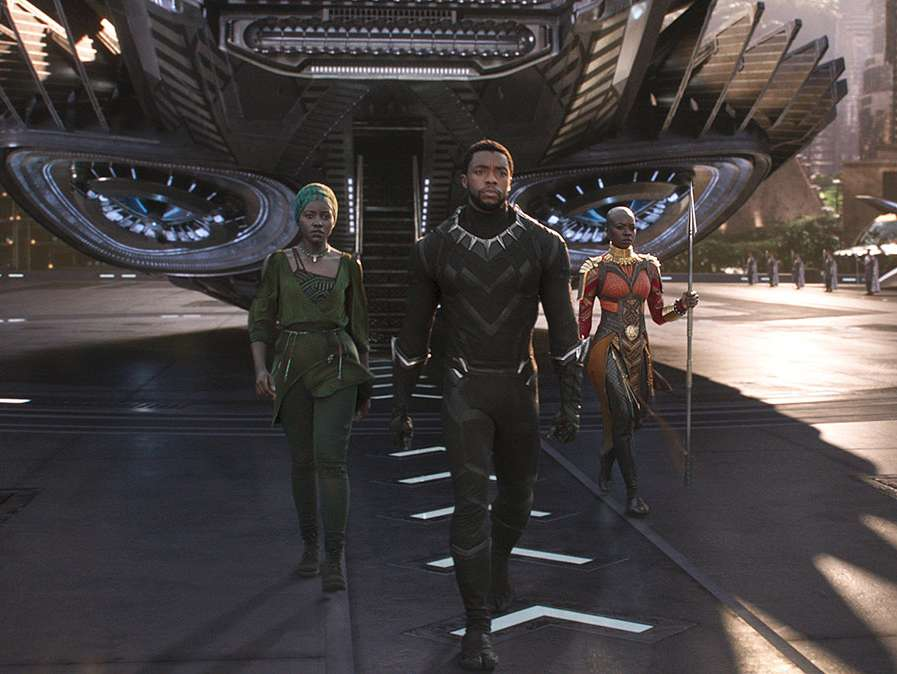
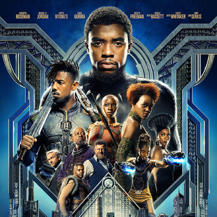
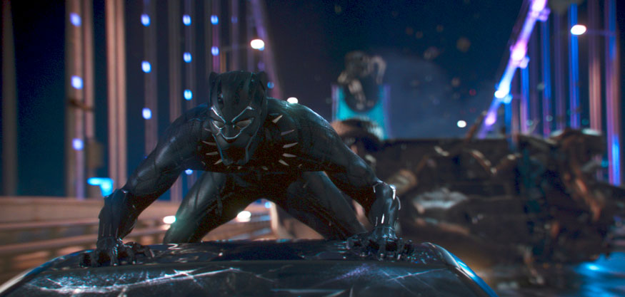
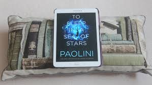

Entertainment
...My favourite movie...



My favourite movie is Black Panther. Black Panther is a fictional superhero appearing in American comic books published by Marvel Comics. Black Panther's real name is T'Challa.
T'Challa is crowned king of Wakanda following his father's death, but he is challenged by Killmonger who plans to abandon the country's isolationist policies and begin a global revolution.
Black Panther was nominated for seven Academy Awards—including Best Picture—and won three.
In 2020, two years after its debut, Black Panther had a 96% “Fresh” score on film review aggregator Web site Rotten Tomatoes.
The use of visual effects in this movie won my attraction.
The below web page contain How Black Panther‘s Visual Effects Team Infused the Panther Suits With Vibranium Technology.
...My favourite novel...
To Sleep in a Sea of Stars is my favourite novel. To Sleep in a Sea of Stars is the highly-anticipated brand new epic science fiction novel from New York Times and Sunday Times bestselling author, Christopher Paolini.
Kira Navárez dreamed of life on new worlds. Now she's awakened a nightmare. During a routine survey mission on an uncolonized planet, Kira finds an alien relic. At first she's delighted, but elation turns to terror when the ancient dust around her begins to move.
As war erupts among the stars, Kira is launched into a galaxy-spanning odyssey of discovery and transformation. First contact isn't at all what she imagined, and events push her to the very limits of what it means to be human.
While Kira faces her own horrors, Earth and its colonies stand upon the brink of annihilation. Now, Kira might be humanity's greatest and final hope...

...I love travel...
I love travel with friends. It makes me feel happy and I can relax my mind. And also I can gain knowledge about the country.